Follow the snail into the shell — four specimens of the second largest phylum await.
Tap to begin
Mollusc Maze
The Spiral of Nacre
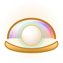
Best Descent--:--
Finest Haul0
Chamber1 / 4
0
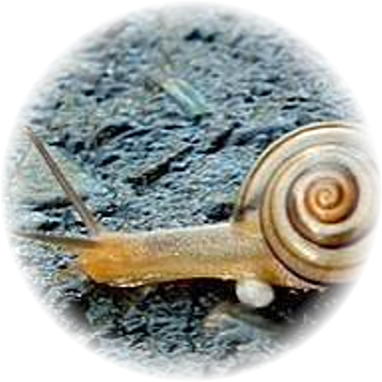
Pila
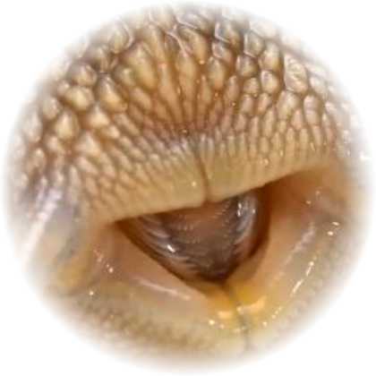
Radula
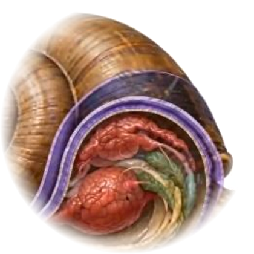
Visceral Hump
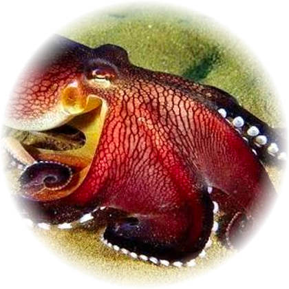
Octopus
Chamber I · Pila
Loading…
The Shell Opens
You reached the heart of the spiral.
0
pearls gathered
Descent0:00
Lures0
Misreads0
A new finest descent!
How to Play
The snail descends a spiral shell with four chambers. A specimen waits in each one, and each poses a riddle about mollusc anatomy.
Read the riddle on the nacre plate.
Type your answer and press Enter, or tap Inscribe.
Stuck? Tap Lure for a clue — but it costs you a pearl.
Answer correctly and the snail crawls deeper into the shell.
Clear all four chambers to reach the pearl at the heart.
Pearls: 3 for a clean first answer, fewer if you use a lure or misread. Wrong guesses never end your run — try as often as you like.
Settings
Background Music
Sound Effects
Field Notes — Phylum Mollusca
Mollusca is the second largest animal phylum after Arthropoda, with over 85,000 known species — snails, clams, octopuses, squid and more. However varied, most share one body plan: a head, a muscular foot, and a visceral hump wrapped in a mantle that secretes the shell.
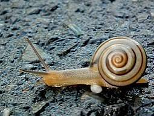
The FootA single muscular foot — seen here on Pila — ripples in waves to crawl, burrow or swim.
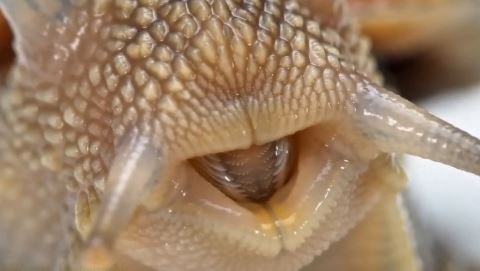
The RadulaA chitinous, file-like ribbon of teeth that rasps food away. Found in molluscs and nowhere else.
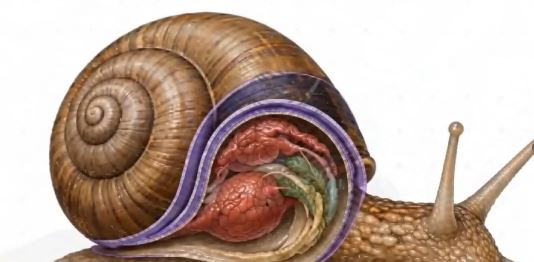
Hump, Mantle & ShellThe visceral hump holds the organs. The mantle around it secretes the calcareous shell and encloses the mantle cavity, where the gills sit.
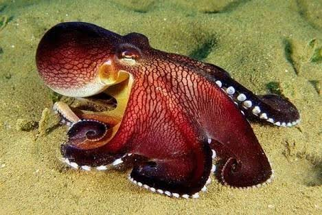
Class CephalopodaOctopuses kept the mantle cavity and jet water through it to swim — but lost the shell entirely.
The iridescence in this game is nacre — mother-of-pearl — built by the mantle in microscopic aragonite layers. A pearl is simply nacre laid down around an irritant. No other phylum makes it.